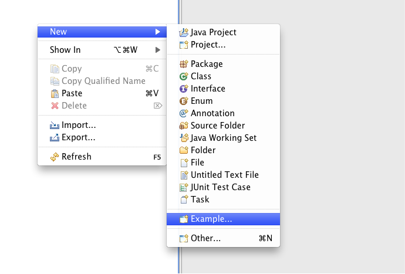

In this tutorial you will learn how to use the EMFStore example.
Follow the steps below to setup emfstore, import the example projects into workspace and to run them.
This tutorial will assume that you have a running Eclipse with the plugins EMF Store and EMF Client Platform installed, and that you know how to create and share a new project in the EMF Client Platform.
Please refer to the setup tutorials to get started.
This tutorial will assume that you have a running Eclipse with the plugins EMF Store and EMF Client Platform installed, and that you know how to create and share a new project in the EMF Client Platform.
Please refer to the setup tutorials to get started.
If you followed both tutorials above step by step, importing the examples into workspace is really simple.
Just use the "New example wizard" and all steps are done automatically.
"right Click >>> New >>> Example".

And then selected the example to be imported."Next >>> Finish".
The structure of the example project is really simple. The source folder contains the example application.
All required launchconfigs to run the example are contained in the launch folder.
You have to decide between launchconfigs for developers and launch configs for users. If you have been following the steps above, the "user launchconfigs" are responsible for you. But if you are using a clone of the git respository, then you have to use the developer launch configs.
To run the example, you have to process two steps.
Step 5: Examples